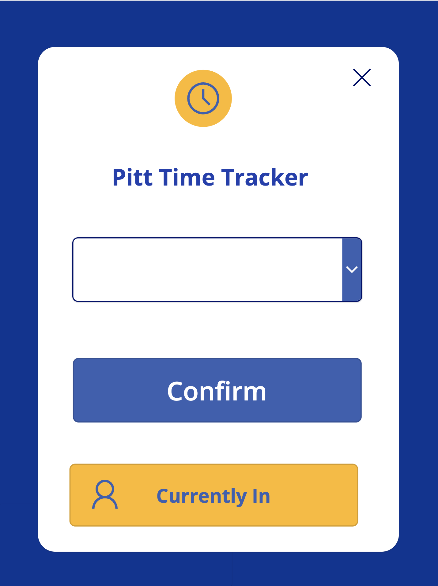
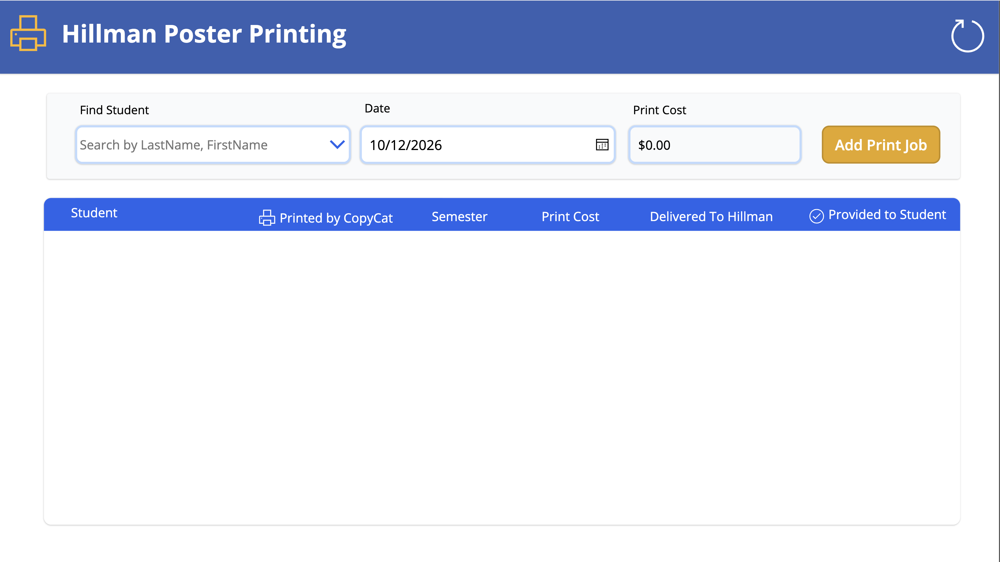
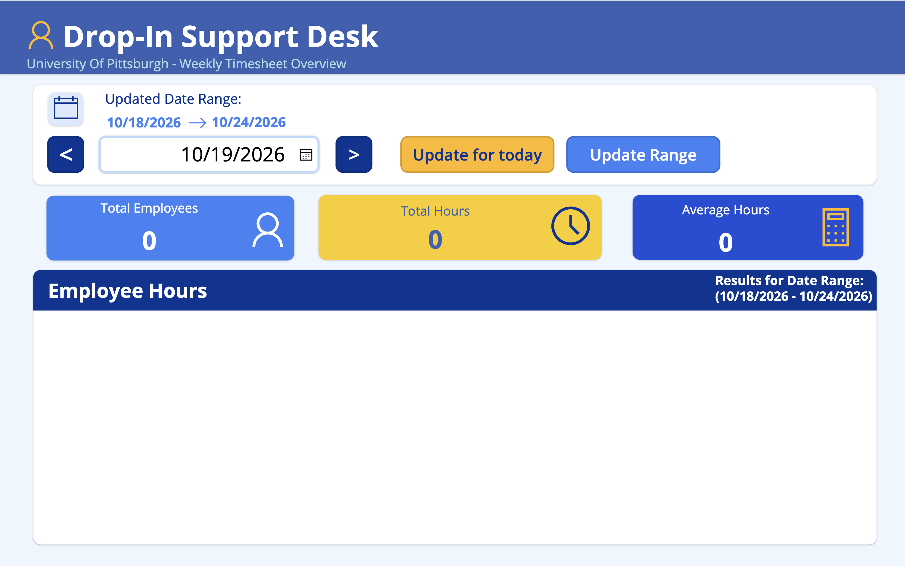
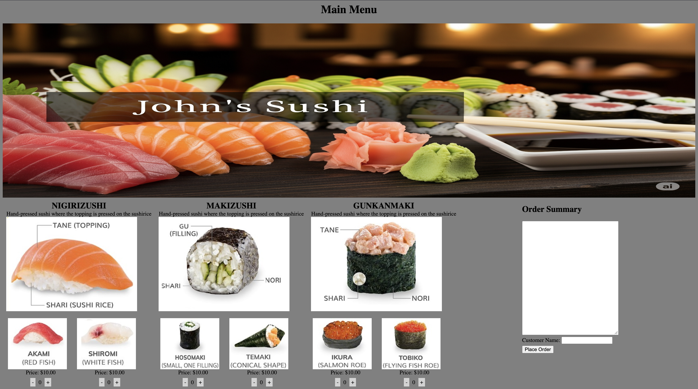
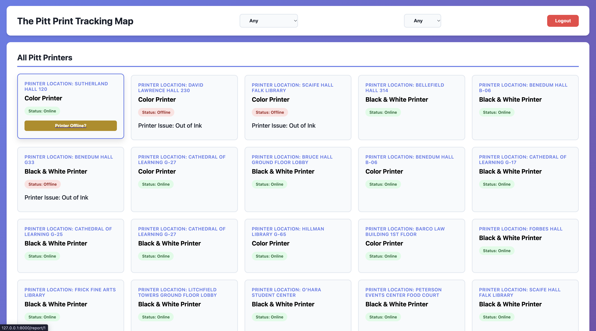
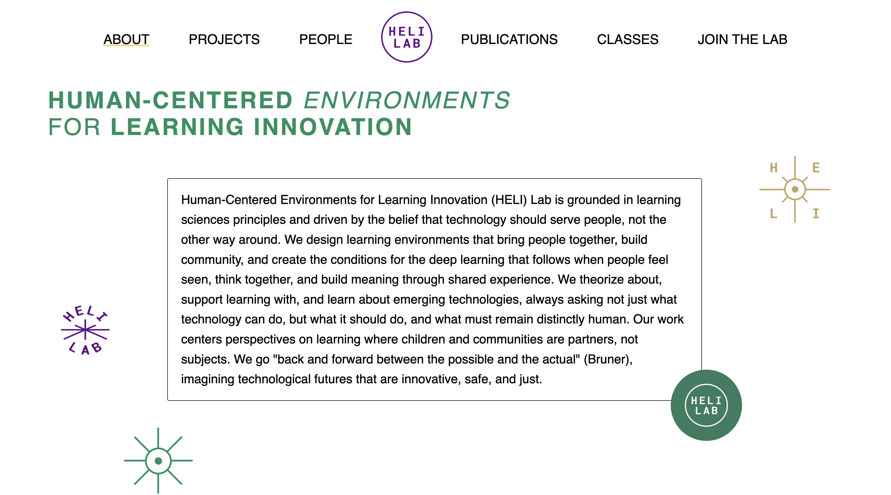

-

Time Tracking App
This is a mobile app that I created for tracking student worker timecards at the
Drop-In Support Desk. This app is connected to a database we used to verify the validity
of their hours worked. The desk is still using the app to this day to track student
worker hours.
-

Poster Printing App
This is used by the Drop-In Support Desk and CopyCat Print Service to track posters
being handed out in the Hillman Library. Once a job is printed CopyCat adds the job to
the database using this app and once the poster is delivered to the Drop-In Support Desk
the staff marks the poster as delievered. Finally, when the end user picks up the poster
the job is marked as completed and database is updated.
-

DateChange App
Used by the Full Time Employees at the Drop-In Support Desk to easily check previous
weeks hours worked. This was a GUI of our database that allowed users to easily fetch
the total hours worked that week, the average hours per student worker, and what each
shift every student worked.
-

Restraunt Site
This was the Final Project in CS1530 at the University of Pittsburgh. We needed to
create an API that was able to interact with an orders database. User's were able to
publish an order to the database and on the backend the kitchen is able to see all the
orders and clear them as they are made.
-

Printing Outage Site
This was a API created for a Software Engineering course at the University of Pittsburgh.
We created a way to track what printers were operational on campus along with the reasons
they were offline. Their was a student portal along with an admin portal. Students could
see what printers were online and mark printers as offline if one wasn't working. Admin's
were able to add printer, delete printers, and mark printers as fixed.
-

HELI Lab
This is a site I helped create as part of my Capstone at the University of Pittsburgh.
I was the Scrum Master throughout this project, but heavily assisted in creating uniform
code and standardizing the appearence across team members and pages. We relocated the HELI
Lab page to a new hosting platform, updated information from the old site, and stylized
the page in a more up to date fasion.